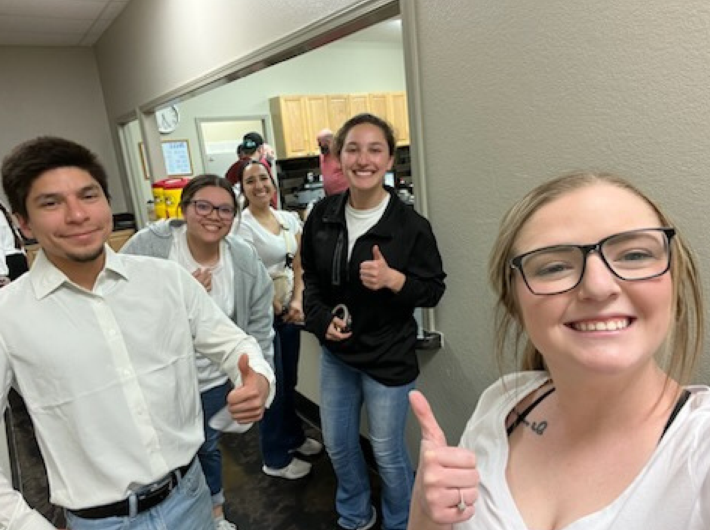
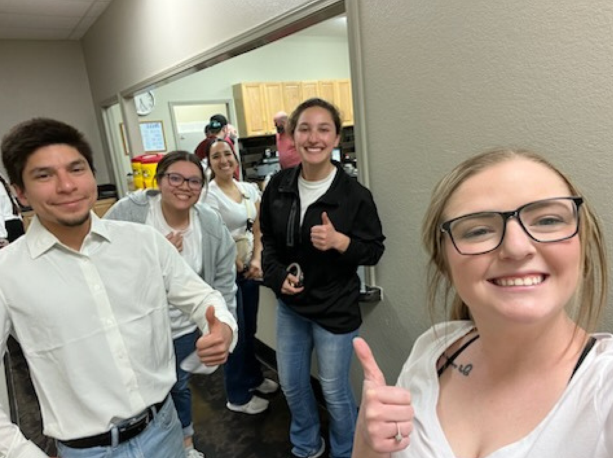

Summary
Computer Information Systems Student at West Texas A&M University with experience in programming, data analysis, and software development.
Skilled in C#, SQL, and HTML/CSS. Experienced in effective communication and teamwork, ready to contribute to innovative and impactful tech solutions.
Education
Bachelor of Business Administration in Computer Information Systems, West Texas A&M, Canyon, TX, Anticipated Fall 2025 • 3.7 GPA
Associate of Science in General Studies, Frank Phillips College, Borger, TX, May 2023 • 3.44 GPA
Work History
Substitute Teacher August 2023 - April 2025
Borger Independent School District – Borger, TX
- Implemented lesson plans and managed classroom behavior for grades K-8, ensuring a positive learning environment.
- Adapted instructional methods to meet diverse student needs and communicated effectively with staff.
Skills
SQL: Experience querying, analyzing, and summarizing large datasets.
Data Analytics & Visualization: Databricks and Power BI for analyzing large datasets, creating dashboards, and producing reports to highlight trends
Programming and Web Development: HTML/CSS (static websites, responsive design, page structure) and C# Fundamentals (variables, loops, functions, and OOP).
Microsoft Office: Experienced in Excel (data analysis, charts), Word (reports), PowerPoint (presentations), and Outlook (email, scheduling).
Achievements
- President's List, WTAMU, Fall 2024
- President's List, WTAMU, Fall 2023
- Outstanding Accomplishment in Biology, Frank Phillips College, 2023
- Phi Theta Kappa Member, January 2023
Volunteer Experience
Server
Borger Care Net Pregnancy Center Fundraiser Banquet
Fellowship Church, Borger, TX
Date: April 2023
- Assisted in distributing food and drinks during the fundraiser.
- Helped with cleanup after the event.
 
